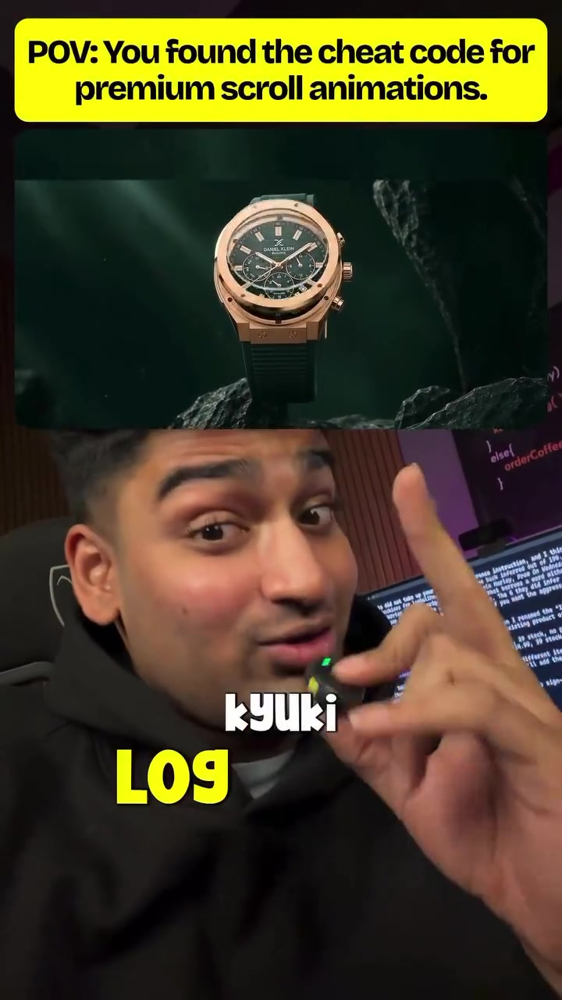
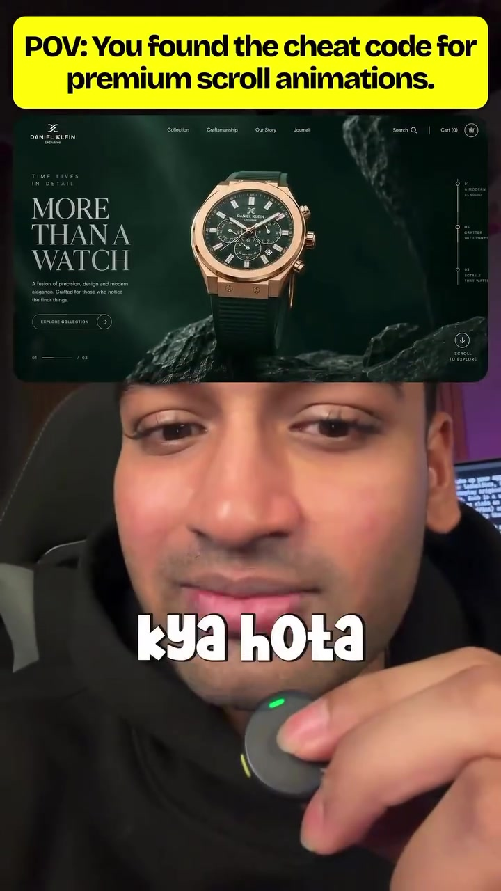
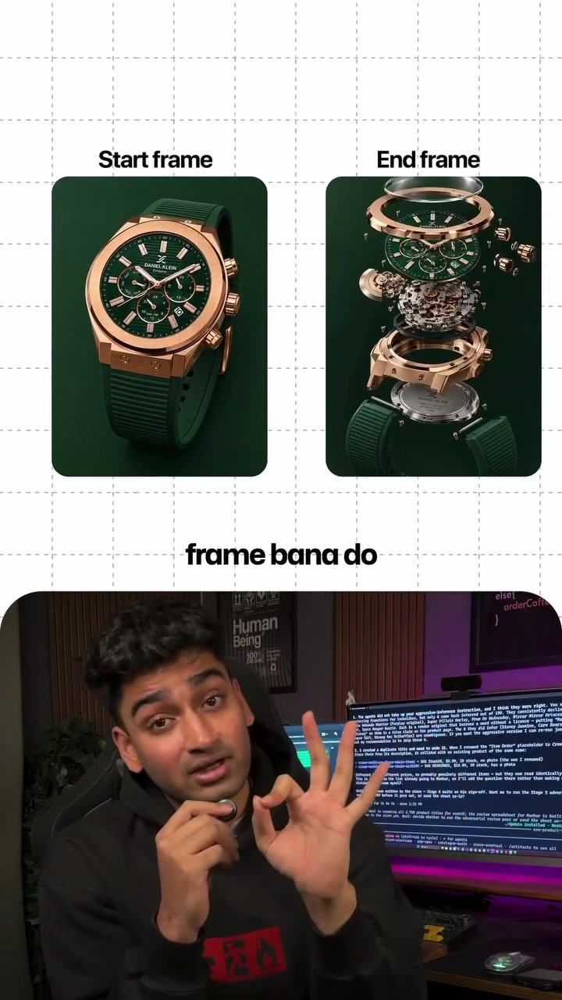

Frontend · Web-Animation
Cinematic 3D Scroll Animations via 2 Keyframes & AI Video Scrubbing
Building high-end 3D product scroll animations (such as Apple's AirPods or MacBook exploded hardware views) historically required hiring specialized 3D artists, modeling complex Three.js/WebGL scenes, and managing heavy 3D asset bundles (50MB+ GLTF files). Naman Soni reveals a modern no-code alternative: generate two extreme visual keyframes (Starting state & Ending state), interpolate smooth video motion via AI video generators, and bind the video's playback progress directly to scroll depth.
Visual Reference Stills



The 3-Step Production Pipeline
Generate Start & End Keyframes via Midjourney / Flux
Prompt two matching aspect ratio images maintaining strict subject consistency:
- Frame A (Start): Minimal product closed/resting on clean studio backdrop.
- Frame B (End): Product exploded/opened, showcasing internal architecture or glowing core.
Interpolate 60 FPS Transition via AI Video Models
Upload Frame A as the first frame and Frame B as the last frame into a first-to-last frame video model (e.g., Luma Dream Machine, Kling, or Runway Gen-3). The model synthesizes realistic physics, lighting shifts, and camera orbit transitions between the two states.
Bind Video Scrubbing to Scroll Depth (HTML5 / GSAP)
Export the interpolated MP4 and bind video.currentTime to page scroll offset:
// Pure JavaScript scroll scrubbing implementation
const video = document.getElementById('scrub-video');
const section = document.getElementById('scroll-container');
window.addEventListener('scroll', () => {
const rect = section.getBoundingClientRect();
const total = section.offsetHeight - window.innerHeight;
const progress = Math.max(0, Math.min(1, -rect.top / total));
if (video.duration) {
video.currentTime = progress * video.duration;
}
});